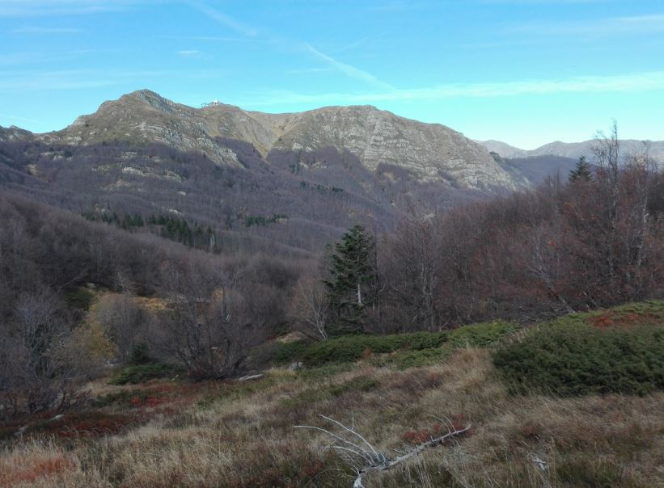
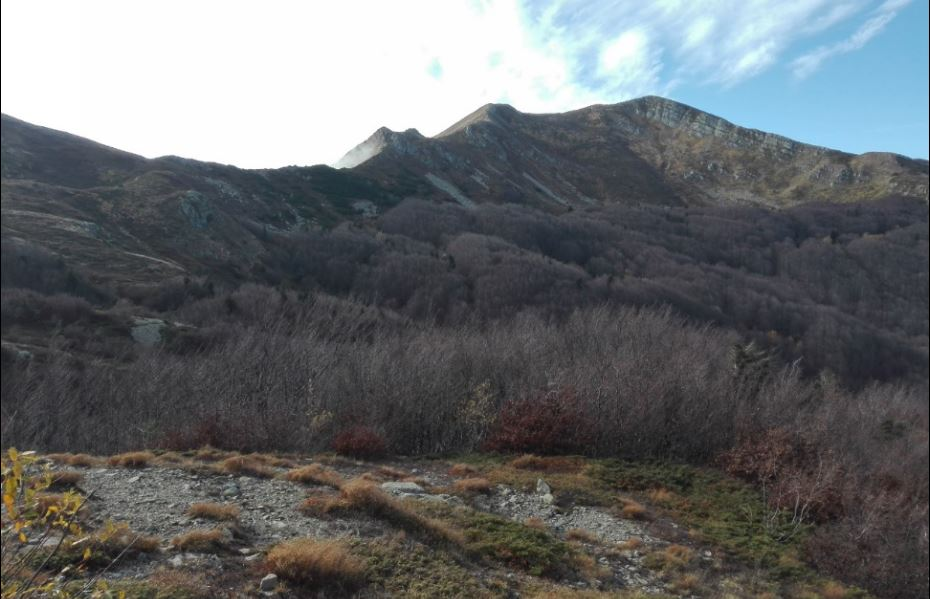

Beatrice di Pian degli Ontani
Da questo punto è possibile avere uno sguardo d’insieme sull’intera valle ed è, credeteci, una vista mozzafiato. Il poetico paesaggio della montagna pistoiese suscita emozioni forti oggi come ieri quando questi luoghi risuonavano del canto popolare della gente semplice e genuina che vi abitava.
Una delle voci più significative della poesia popolare della valle del Sestaione è rappresentato da Beatrice di Pian degli Ontani, poetessa improvvisatrice di notevole talento, vissuta nel XIX secolo e apprezzata dai più importanti intellettuali dell’epoca come Niccolò Tommaseo, Francesca Alexander, John Ruskin.
Beatrice Bugelli nacque nel 1803 al Conio, figlia di Giovacchino e Apollonia Petrucci.
Dotata di grande intelligenza e sensibilità, trascorreva la sua vita aiutando il padre essendo rimasta orfana di madre in tenera età; le sue uniche fonti di ricchezza erano i lavori manuali e la cura del bestiame a cui lei era molto affezionata, per questo fu soprannominata “Poetessa pastora”.
Non vi maravigliate, o giovinetti,
se non sapessi troppo ben cantare:
in casa mia non c’è stato maestri
e manco a scuola son ita a imparare.
Se voi volete intender la mia scuola:
su questi poggi all’acqua e alla gragnola.
Volete intender voi lo mio imparare?
Andar per legna o starmene a zappare.
In questo testo Beatrice vuol far capire che la sua poesia non nasceva da un’istruzione scolastica regolare, dal momento che l’unico insegnamento ricevuto fu quello dei suoi genitori basato sull’esercizio della pazienza e del rispetto. Il paesaggio della valle del Sestaione, con il suo clima rigido e spigoloso fu, per la giovane Beatrice, un importante maestro di vita e di canto estemporaneo.
Mentre gli anni passavano Beatrice conobbe l’amore.
In queste parti c'è apparito un giglio
Non so s'io lo amo e se lo lasso andare
Gente d'intorno date a me un consiglio
Se questo è un giglio da poterlo amare.
O figlia non aveste mai ventura
D'amare un giglio di sì bella altezza.
____
Voi siete quel fiorin sull'alpe
Dove l'aria produce tante stelle
Voi siete nato fra le robe bianche
E ricamato fra l'oro e le perle.
Voi siete nato di gentil lavoro
Fatto di pelle e ricamato d'oro
E di gentil lavoro voi siete nato
Fatto di perle e d'oro ricamato
Nel 1823 Beatrice si sposò nella Chiesa di S. Giovanni Crisostomo con Matteo di Pian di Novello e quel giorno scoprì il suo dono di poetessa, incantando tutti gli invitati con le sue poesie nate dal cuore in maniera improvvisa. Da allora cominciò a cantare tutti i suoi sentimenti e chiunque la ascoltasse rimaneva lì, ipnotizzato dalla bellezza dei suoi versi. Dal matrimonio nacquero otto figli di cui ne sopravvissero cinque.
Io ho camminato più di cento miglia
sempre davanti alla spera del sole
Non ho trovato chi vi rassomiglia
un giovin come voi al paragone.
Di voi il paragon non ho trovato
siete più bello del cielo stellato.
Di voi non ho trovato il paragone
siete più bello di quel bello Adone
Nel 1836 Beatrice perse la sua vecchia dimora a causa dell'esondazione del Sestaione: fu un evento traumatico nella sua esistenza, nel pericolo estremo non si arrese e riuscì a mettere in salvo la sua famiglia. Beatrice e Matteo costruirono una nuova casa, più comoda, quasi sulla strada di Pian di Novello.
Quando la mi' casa venne a rovinare
Mi scaturiva il sangue d'ogni vena;
'Na creatura avevo a nutricare,
Mancò la forza a me, mancò la lena:
E non avevo i piè per camminare,
La poesia allora perse la vena.
Nel momento di quel tremibil danno
Io mi restai sommersa in grand'affanno.
La nostra “Poetessa pastora” trascorse la sua vita occupandosi della famiglia cercando di portare avanti con coraggio la sua passione poetica nonostante le riserve del marito, i pregiudizi e le invidie degli altri improvvisatori.
A poco a poco Beatrice si ritirò al focolare domestico, ma il suo pensiero era vicino ai familiari, agli amici che la conobbero nei momenti tristi e nelle sue festose giornate.
La sua vita si spense il 25 marzo 1885 nella sua umile dimora.

Il circo glaciale
Da questo punto è ben visibile il circo glaciale, la conca dove fino a 15000 anni fa era la testa del ghiacciaio. Da una certa distanza tali strutture del paesaggio sono sicuramente meglio distinguibili.